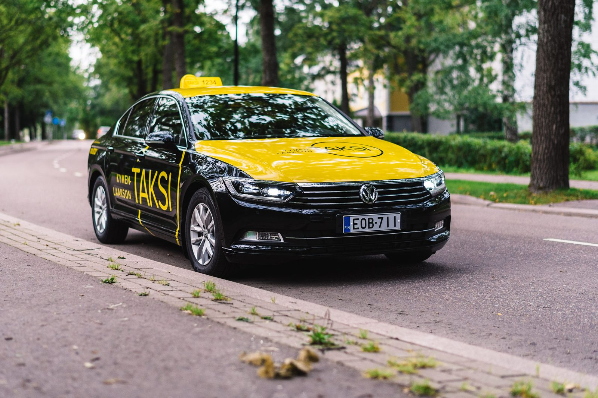

Kela-taksi
Kymenlaakson Taksi Oy on Kelan sopimuskumppani Kymenlaakson alueella (Hamina, Kotka, Kouvola, Miehikkälä, Pyhtää ja Virolahti). Tilaa Kelan korvaama taksimatka numerosta 0800 411254. Tilauspuhelu on maksuton.
Tilaa Kela-taksi numerosta
0800 411254Tilauspuhelu on maksuton.
Kymenlaakson Taksi Oy on Kelan sopimuskumppani Kymenlaakson alueella (Hamina, Kotka, Kouvola, Miehikkälä, Pyhtää ja Virolahti). Tilauspuhelu on maksuton.
Tilaus tekstiviestillä kuulo- ja puhevammaisille
Voit tilata matkan tekstiviestillä maksuttomasta numerosta 18445. Saat vahvistuksen ja noutoajan tekstiviestillä.
Kerro viestissä samat tiedot kuin puhelintilauksessa (katso alta "Ilmoita tilauksen yhteydessä").
Ohjeita Kela-taksin tilaamiseen
- Vain Kela-taksin numerosta tilatusta matkasta voit saada korvauksen ja maksat matkasta enintään 25 euron omavastuun.
- Tilaa taksi viimeistään matkaa edeltävänä päivänä klo 14 mennessä.
- Tilaa taksi tästä numerosta myös silloin, kun tarvitset taksia äkillisesti.
- Voit tilata yhdellä kertaa tulevan kahden viikon ajalle kaikki tiedossasi olevat meno- ja paluumatkat.
- Tilaa paluumatka vähintään tuntia ennen lähtöaikaa, jos paluumatkan ajankohta on tiedossa.
- Tilauspuhelut nauhoitetaan palvelun laadun kehittämiseksi. Tarvittaessa Kela voi myös tarkistaa jälkikäteen tilauksen tietoja.
- Puhelun yhteydessä antamiasi tietoja ei käytetä muuhun kuin matkan järjestämiseen ja matkakorvauksen käsittelyyn Kelassa. Henkilötietolaissa tarkoitettu tietojen rekisterinpitäjä on Kela.
- Palvelu on auki ympäri vuorokauden, joka päivä.
- Nimesi ja henkilötunnuksesi
- Tilaatko matkan terveydentilasi vai liikenneolosuhteiden puutteen vuoksi
- Osoite, josta auto sinut noutaa
- Matkan määränpää (esim. sairaala)
- Kellonaika, jolloin sinun tulee olla perillä hoitoyksikössä
- Tuleeko mukaasi apuvälineitä tai saattaja
- Puhelinnumero, josta sinut tavoittaa
- Saat tekstiviestin, kun auto on hyväksynyt matkan. Viestissä on arvioitu noutoaika, auton rekisterinumero ja kuljettajan puhelinnumero.
- Jos tilaamaasi taksimatkaan tulee muutoksia, ilmoita niistä välittömästi numeroon 0800 411254, viimeistään kahta tuntia ennen sovittua lähtöaikaa.
Näytä kuljettajalle Kela-korttisi tai henkilöllisyystodistus matkan alkaessa.
- Jos tarvitset taksia terveydentilasi vuoksi, kysy todistusta terveydenhuollosta (Todistus matkakorvausta varten, SV 67).
- Säilytä kertamatkaa varten kirjoitettu todistus itselläsi 6 kuukauden ajan matkapäivästä. Kela voi pyytää sitä myöhemmin.
- Toimita pitkäaikainen taksin käyttöön oikeuttava todistus Kelaan.
- Jos terveydenhuollon henkilö tilaa paluumatkasi, et tarvitse todistusta SV 67.
Tietyillä asiakasryhmillä on mahdollisuus saada vakiotaksiasiakkuus. Lisätietoa: kela.fi/taksimatkat.
Jos Kela on myöntänyt sinulle vakiotaksiasiakkuuden, soita numeroon 0800 411254. Osoitamme sinulle vakiokuljettajan. Sovit matkat suoraan vakiokuljettajasi kanssa, ja kuljettaja ilmoittaa matkan meille viimeistään edellisenä päivänä klo 14. Myös äkilliset matkat tilataan vakiotaksilta.
Anna palautetta
Kerro meille, miten Kela-taksi-matkasi sujui. Palaute auttaa meitä kehittämään palvelua.
Voit antaa palautetta myös puhelimitse numerossa 0800 411254. Vastaamme palautteisiin 7 vuorokauden kuluessa.
Anna palautettaLisätietoa Kelan korvaamista taksimatkoista
Lue lisää ehdoista: kela.fi/taksimatkat
Matkakorvaukseen liittyvissä kysymyksissä ota yhteyttä Kelan yhteyskeskukseen, puh. 020 692 204.
Kiireellistä sairaankuljetusta tarvittaessa soita hätänumeroon 112.
Tarvitsetko vaikeavammaisten kuljetuspalvelua? Lue lisää Sote-taksista.
Terveydenhuollolle, liikenteenharjoittajille ja yhteystiedot
Terveydenhuollon ammattilaisille
0800 411256Maksuton, palvelee ympäri vuorokauden. Terveydenhuollon tilaama matka ei vaadi SV 67 -todistusta.
Liikenteenharjoittajille ja kuljettajille
0800 411257Maksuton, palvelee ympäri vuorokauden. Esimerkiksi vakiotaksitilaukset, matkan muutokset ja reittimuutokset.
Puhelutallenteet ja omat tietosi
Sinulla on oikeus kuunnella sinua koskeva tilauspuhelun tallenne ja tarkistaa, mitä tietoja sinusta on tallennettu. Sovi asiasta numerossa 0800 411254 tai sähköpostilla kela@kymenlaaksontaksi.fi. Tallenteita säilytetään 12 kuukautta.
Yhteystiedot
Kymenlaakson Taksi Oy
Y-tunnus 1941760-7
Ruuvikatu 12, 48770 Kotka